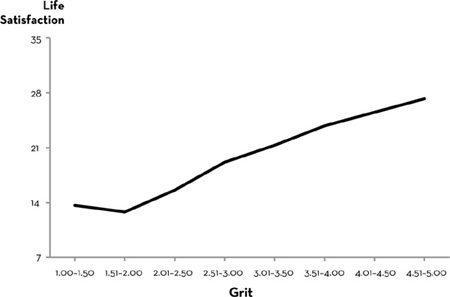

Chapter 13 Chapter 13
Chapter 13 Chapter 13This book has been about the power of grit to help you achieve your potential. I wrote it because what we accomplish in the marathon of life depends tremendously on our grit—our passion and perseverance for long-term goals. An obsession with talent distracts us from that simple truth.
This book has been my way of taking you out for a coffee and telling you what I know.
I’m almost done.
Let me close with a few final thoughts. The first is that you can grow your grit.
I see two ways to do so. On your own, you can grow your grit “from the inside out”: You can cultivate your interests. You can develop a habit of daily challenge-exceeding-skill practice. You can connect your work to a purpose beyond yourself. And you can learn to hope when all seems lost.
You can also grow your grit “from the outside in.” Parents, coaches, teachers, bosses, mentors, friends—developing your personal grit depends critically on other people.
My second closing thought is about happiness. Success—whether measured by who wins the National Spelling Bee, makes it through West Point, or leads the division in annual sales—is not the only thing you care about. Surely, you also want to be happy. And while happiness and success are related, they’re not identical.
You might wonder, If I get grittier and become more successful, will my happiness plummet?
Some years ago, I sought to answer this question by surveying two thousand American adults. The graph below shows how grit relates to life satisfaction, measured on a scale that ranged from 7 to 35 and included items such as, “If I could live my life over, I would change almost nothing.” In the same study, I measured positive emotions such as excitement and negative emotions such as shame. I found that the grittier a person is, the more likely they’ll enjoy a healthy emotional life. Even at the top of the Grit Scale, grit went hand in hand with well-being, no matter how I measured it.

When my students and I published this result, we ended our report this way: “Are the spouses and children of the grittiest people also happier? What about their coworkers and employees? Additional inquiry is needed to explore the possible downsides of grit.”
I don’t yet have answers to those questions, but I think they’re good ones to ask. When I talk to grit paragons, and they tell me how thrilled they are to work as passionately as they do for a purpose greater than themselves, I can’t tell whether their families feel the same way.
I don’t know, for example, whether all those years devoted to a top-level goal of singular importance comes at a cost I haven’t yet measured.
What I have done is ask my daughters, Amanda and Lucy, what it’s like to grow up with a gritty mom. They’ve watched me attempt things I’ve never done before—like write a book—and they’ve seen me cry when it got really rough. They’ve seen how torturous it can be to hack away at innumerable doable, but hard-to-do, skills. They’ve asked, at dinner: “Do we always have to talk about deliberate practice? Why does everything have to come back to your research?”
Amanda and Lucy wish I’d relax a little and, you know, talk more about Taylor Swift.
But they don’t wish their mother was anything other than a paragon of grit.
In fact, Amanda and Lucy aspire to achieve the same. They’ve glimpsed the satisfaction that comes from doing something important—for yourself and others—and doing it well, and doing it even though it’s so very hard. They want more of that. They recognize that complacency has its charms, but none worth trading for the fulfillment of realizing their potential.
Here’s another question I haven’t quite answered in my research: Can you have too much grit?
Aristotle argued that too much (or too little) of a good thing is bad. He speculated, for example, that too little courage is cowardice but too much courage is folly. By the same logic, you can be too kind, too generous, too honest, and too self-controlled. It’s an argument that psychologists Adam Grant and Barry Schwartz have revisited. They speculate that there’s an inverted-U function that describes the benefits of any trait, with the optimal amount being somewhere between the extremes.
So far, with grit I haven’t found the sort of inverse U that Aristotle predicted or that Barry and Adam have found for other traits, like extroversion. Regardless, I recognize that there are trade-offs to any choice, and I can appreciate how that might apply to grit. It isn’t hard to think of situations in which giving up is the best course of action. You may recall times you stuck with an idea, sport, job, or romantic partner longer than you should have.
In my own experience, giving up on piano when it became clear I had neither interest in it nor obvious talent was a great decision. I could have given up even earlier, actually, and saved my teacher from having to listen to me sight-read all the pieces I hadn’t practiced the week before. Giving up on becoming fluent in French was also a good idea, even though I did enjoy it and picked it up more quickly than I did piano. Less time spent on piano and French freed up time for pursuits I found more gratifying.
So, finishing whatever you begin without exception is a good way to miss opportunities to start different, possibly better, things. Ideally, even if you’re discontinuing one activity and choosing different lower-order goals, you’re still holding fast to your ultimate concern.
One reason I don’t worry much about an epidemic of grit is that such a prospect seems so removed from our current reality. How many days have you come home from work and said to your partner, “Gosh, everyone at the office is just too gritty! They stick with their most valued goals too long! They try too hard! I wish they were less passionate!”
Recently, I asked three hundred American adults to take the Grit Scale and, after receiving their scores, to tell me how they felt. Many said they were happy with their scores, and some wanted to be grittier. Nevertheless, in the entire sample, there wasn’t a single person who, upon reflection, aspired to be less gritty.
I’m certain most of us would be better off with more grit, not less. There may be exceptions—grit outliers who don’t need to be any grittier—but those exceptions are rare.
I’ve been asked, on more than one occasion, why I feel grit is the only thing that matters. In fact, I don’t.
I can tell you, for example, that grit is not the only thing I want my children to develop as they round the corner from childhood to maturity. Do I want them to be great at whatever they do? Absolutely. But greatness and goodness are different, and if forced to choose, I’d put goodness first.
As a psychologist, I can confirm that grit is far from the only—or even the most important—aspect of a person’s character. In fact, in studies of how people size up others, morality trumps all other aspects of character in importance. Sure, we take notice if our neighbors seem lazy, but we’re especially offended if they seem to lack qualities like honesty, integrity, and trustworthiness.
So, grit isn’t everything. There are many other things a person needs in order to grow and flourish. Character is plural.
One way to think about grit is to understand how it relates to other aspects of character. In assessing grit along with other virtues, I find three reliable clusters. I refer to them as the intrapersonal, interpersonal, and intellectual dimensions of character. You could also call them strengths of will, heart, and mind.
Intrapersonal character includes grit. This cluster of virtues also includes self-control, particularly as it relates to resisting temptations like texting and video games. What this means is that gritty people tend to be self-controlled and vice versa. Collectively, virtues that make possible the accomplishment of personally valued goals have also been called “performance character” or “self-management skills.” Social commentator and journalist David Brooks calls these “resume virtues” because they’re the sorts of things that get us hired and keep us employed.
Interpersonal character includes gratitude, social intelligence, and self-control over emotions like anger. These virtues help you get along with—and provide assistance to—other people. Sometimes, these virtues are referred to as “moral character.” David Brooks prefers the term “eulogy virtues” because, in the end, they may be more important to how people remember us than anything else. When we speak admiringly of someone being a “deeply good” person, I think it’s this cluster of virtues we’re thinking about.
And, finally, intellectual character includes virtues like curiosity and zest. These encourage active and open engagement with the world of ideas.
My longitudinal studies show these three virtue clusters predict different outcomes. For academic achievement, including stellar report card grades, the cluster containing grit is the most predictive. But for positive social functioning, including how many friends you have, interpersonal character is more important. And for a positive, independent posture toward learning, intellectual virtue trumps the others.
In the end, the plurality of character operates against any one virtue being uniquely important.
I’m often asked whether encouraging grit does children a disservice by setting expectations unreasonably high. “Careful, Dr. Duckworth, or children will all grow up thinking they can be Usain Bolt, Wolfgang Mozart, or Albert Einstein.”
If we can’t be Einstein, is it worth studying physics? If we can’t be Usain Bolt, should we go for a run this morning? Is there any point in trying to run a little faster or longer than we did yesterday? In my view, these are absurd questions. If my daughter says to me, “Mom, I shouldn’t practice my piano today because I’ll never be Mozart,” I’ll say in reply, “You’re not practicing piano to be Mozart.”
We all face limits—not just in talent, but in opportunity. But more often than we think, our limits are self-imposed. We try, fail, and conclude we’ve bumped our heads against the ceiling of possibility. Or maybe after taking just a few steps we change direction. In either case, we never venture as far as we might have.
To be gritty is to keep putting one foot in front of the other. To be gritty is to hold fast to an interesting and purposeful goal. To be gritty is to invest, day after week after year, in challenging practice. To be gritty is to fall down seven times, and rise eight.
I was interviewed recently by a journalist. As he was packing up his notes, he said, “So, it’s obvious you could have talked all day. You really love this subject.”
“Oh, gosh. Is there anything as interesting as the psychology of achievement? Could there be anything more important?”
He chuckled. “You know,” he said, “I absolutely love what I do, too. It’s amazing to me how many people I know who’re well into their forties and haven’t really committed to anything. They don’t know what they’re missing.”
One final thought.
Earlier this year, the latest MacArthur genius awards were announced. One of the winners was Ta-Nehisi Coates, the journalist whose second book, Between the World and Me, has been an extraordinary best seller.
Eight years ago, Coates was unemployed, recently laid off by Time magazine, and scrambling to get freelance work. It was a hard time. He guesses he gained thirty pounds from the strain. “I knew what kind of writer I wanted to be. I was not becoming that kind of writer. I was banging my head against a wall and nothing was coming out.”
His wife, he says, was “unerringly supportive.” Still, they had a young son. There were practical realities. “I was considering driving a cab.”
He finally got back on his feet, and after pushing through the “extraordinary stress” of his book, he began to hit his stride. “The writing was very, very different. The sentences had much more power.”
In his three-minute video posted on the MacArthur website, the first thing Coates says is: “Failure is probably the most important factor in all of my work. Writing is failure. Over and over and over again.” Then he explains, that as a boy, he was insatiably curious. Growing up in Baltimore, he was particularly obsessed with the idea of physical safety, and the lack thereof, and has remained so since. Journalism, he says, lets him keep asking the questions that interest him.
Toward the end of the video, Coates offers the best description of what it’s like to write that I’ve ever heard. To give you a sense of his intonation, and the cadence, I’ve laid out the words as I heard them—as a poem:
The challenge of writing
Is to see your horribleness on page.
To see your terribleness
And then to go to bed.
And wake up the next day,
And take that horribleness and that terribleness,
And refine it,
And make it not so terrible and not so horrible.
And then to go to bed again.
And come the next day,
And refine it a little bit more,
And make it not so bad.
And then to go to bed the next day.
And do it again,
And make it maybe average.
And then one more time,
If you’re lucky,
Maybe you get to good.
And if you’ve done that,
That’s a success.
You might think Coates is especially modest. He is. But he’s also especially gritty. And I’ve yet to meet a MacArthur Fellow, Nobel laureate, or Olympic champion who says that what they achieved came in any other way.
“You’re no genius,” my dad used to say when I was just a little girl. I realize now he was talking to himself as much as he was talking to me.
If you define genius as being able to accomplish great things in life without effort, then he was right: I’m no genius, and neither is he.
But if, instead, you define genius as working toward excellence, ceaselessly, with every element of your being—then, in fact, my dad is a genius, and so am I, and so is Coates, and, if you’re willing, so are you.